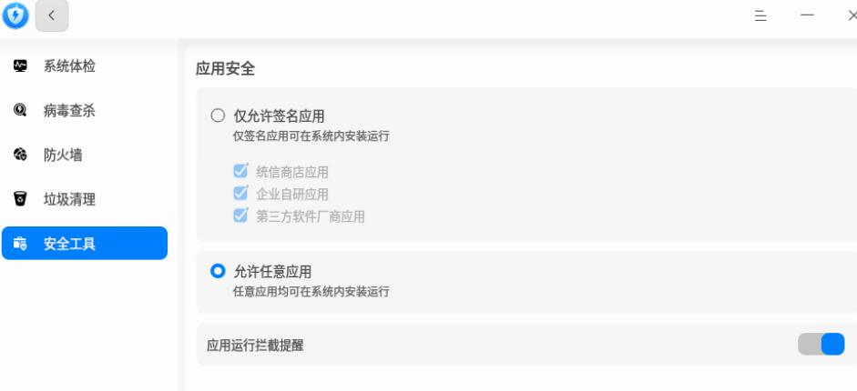
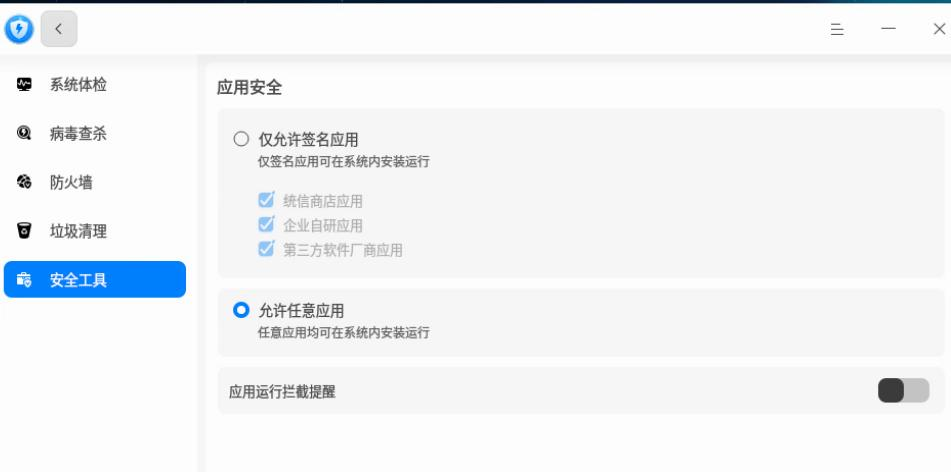

20251021
1. lpstat auto detection
2. ubuntu2204 server verify
Steps:
# ls /dev/usb
ls: cannot access '/dev/usb': No such file or directory
# apt install printer-driver-gutenprint hplip foomatic-db-compressed-ppds openprinting-ppds printer-driver-all avahi-daemon
# reboot
docker load/docker run
Then everything will be OK .
This is because of : installing above packags, automatically install cups/ipp-usb etc.
systemctl mask cups cups.path cups.socket ipp-usb
reboot
After reboot:
root@ubuntu2204server:~# lpinfo -v
Password for root on localhost?
3. change virtualbox display
default is 640x480, or 800x600, change to:
Linux 安装在 GRUB 菜单按 e 编辑
在 linux 行末尾添加：
vga=791 nomodeset
按 F10 启动（791 对应 1024x768）
4. kylin verification
Default status:
test@kylin:~$ sudo systemctl list-units | grep cups
cups.path loaded active waiting CUPS Scheduler
cups.service loaded active running CUPS Scheduler
cups.socket loaded active running CUPS Scheduler
test@kylin:~$ sudo systemctl list-units | grep ipp
test@kylin:~$ sudo systemctl list-units | grep avahi
avahi-daemon.service loaded active running Avahi mDNS/DNS-SD Stack
avahi-daemon.socket loaded active running Avahi mDNS/DNS-SD Stack Activation Socket
Install packages, disable some services.
$ sudo apt install -y openssh-server
$ sudo apt install -y docker.io
$ sudo systemctl mask cups.path cups.service cups.socket
$ sudo docker load<p.tar
Loaded image: printmaster:latest
$ sudo docker run -d --name cups-server1 --restart=always --network=host --privileged --security-opt apparmor=unconfined -v /var/run/dbus:/var/run/dbus -v /dev/bus/usb:/dev/bus/usb -v /dev/usb:/dev/usb -v /run/udev:/run/udev:ro printmaster:latest
$ sudo reboot
After reboot:
test@kylin:~$ sudo lpstat -p -d
输入密码
打印机 Pantum_M6200NW_series_18523C_USB 目前空闲。从 2025年10月21日 星期二 11时46分12秒 开始启用
无系统默认目标
test@kylin:~$ sudo scanimage -L
device `escl:http://127.0.0.1:60000' is a ESCL Pantum M6200NW series[18523C] (USB) flatbed scanner
5. zkfd verification
Stesp:
test@zkfd:~$ sudo docker load<p.tar
073ec47a8c22: Loading layer 80.63MB/80.63MB
9bb545b2e8b4: Loading layer 5.632kB/5.632kB
0d429898b1c6: Loading layer 430.6MB/430.6MB
9ba8a1d35570: Loading layer 38.91kB/38.91kB
7f897527c541: Loading layer 4.096kB/4.096kB
4cd09aaefb50: Loading layer 9.728kB/9.728kB
Loaded image: printmaster:latest
test@zkfd:~$ sudo systemctl list-units | grep cups
cups-browsed.service loaded active running Make remote CUPS printers available locally
cups.service loaded active running CUPS Scheduler
cups.socket loaded active running CUPS Scheduler
test@zkfd:~$ sudo systemctl mask cups-browsed.service cups.service cups.socket
Created symlink /etc/systemd/system/cups-browsed.service → /dev/null.
Created symlink /etc/systemd/system/cups.service → /dev/null.
Created symlink /etc/systemd/system/cups.socket → /dev/null.
6. uos verification

